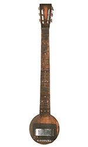
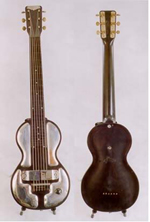
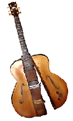
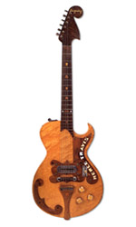

"Frying Pan" Guitarra Elétrica Rickenbacker Frying PanA "frying pan" foi a primeira guitarra elétrica já produzida. O instrumento foi criado em 1931 por George Beauchamp e, posteriormente, fabricado pela Rickenbacker Electro. O instrumento recebeu esse nome porque seu formato lembra uma frigideira: possui um corpo plano e circular, e o braço representa a "alça". Era uma guitarra de lap steel projetada para lucrar com a popularidade da música havaiana durante a década de 1930. Beauchamp e o maquinista Adolph Rickenbacker começaram a vender a Frying Pan em 1932; no entanto, Beauchamp só obteve a patente de sua ideia em 1937, fato que permitiu que outras empresas de guitarra produzissem guitarras elétricas no mesmo período.
Electro String: Esta guitarra elétrica era chamada de Guitarra Espanhola de Baquelite. A baquelite é um tipo antigo de plástico usado para fazer discos, bolas de bilhar e receptores de telefone no início dos anos 1900. A Electro String foi a empresa original que criou a guitarra. Mais tarde, a Electro String mudou seu nome para Rickenbacker. Adolph Rickenbacker manteve outros interesses ao longo da curta história da Electro String; ele nunca teve tanta fé no negócio de guitarras quanto seus sócios. Mesmo assim, ele continuou fabricando instrumentos até 1953, quando vendeu a empresa para F.C. Hall, uma figura importante no mercado musical do sul da Califórnia após a Segunda Guerra Mundial. Essa venda marcou o fim de uma era e o início de outra, o surgimento das guitarras Rickenbacker modernas.
A Les Paul "Log" foi criada por Les Paul após persuadir a Epiphone a deixá-lo usar sua oficina aos domingos. Um captador Gibson foi montado em um bloco de 4" x 4" de madeira maciça de bordo com a corda, para evitar os problemas de microfonia que a guitarra acústica/elétrica tinha na época. Para manter a aparência, ele anexou o corpo de uma guitarra Epiphone hollow-body, serrada longitudinalmente com o Log no meio. Isso resolveu seus dois principais problemas: microfonia, já que o corpo acústico não ressoava mais com o som amplificado, e sustain, já que a energia das cordas não era dissipada na geração de som através do corpo da guitarra. Esses instrumentos foram constantemente aprimorados e modificados ao longo dos anos, e Paul continuou a usá-los em suas gravações muito depois do desenvolvimento de seu modelo Gibson homônimo.
Bigsby Travis Na década de 1940, Paul Bigsby, mais conhecido como o criador do "Bigsby Vibrato", era capataz em uma oficina mecânica de propriedade de Albert Crocker, da Crocker Motorcycle Company. O amor de Bigsby por motocicletas e música country-western levou a uma amizade com o cantor country-western Merle Travis. As sementes da carreira subsequente de Bigsby com seu design de vibrato característico foram provavelmente plantadas no dia em que Travis lhe perguntou se ele poderia consertar uma unidade de vibrato Kaufman. Ele fez mais do que consertá-la. Bigsby criou um sistema totalmente novo. A criação tinha algo que posteriormente se provaria muito importante no desenvolvimento de guitarras elétricas de corpo sólido — todas as seis tarraxas em um lado do headstock, em oposição aos headstocks de três lados populares na época (e, claro, ainda populares em muitas guitarras elétricas de corpo sólido).
 Voltar ao Inicio